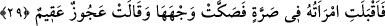

Bir başka rivâyete göre de buranın takdiri şu şekildedir: İbrahim (a.s) onların azap için
gönderilmiş melekler olduğunu düşünerek içinde bir korku hissetti.
Onlar İbrahim (a.s)’ın korktuğunu gördüklerinde, “Korkma! Biz Allah’ın elçileriyiz”
dediler. Bir rivâyete göre Cibrîl (a.s) danaya kanadını sürdü, dana kalkıp anasına doğru
yürüdü. Dana anasına ulaşınca İbrahim (a.s) gelenleri tanıdı ve onlardan emin oldu.
“Ve ona bilgin bir oğlan çocuğu” İshak (a.s)’ı “müjdelediler.” Saffât suresi 37/112.
âyette de “müjdeledik ” ifâdesi geçmektedir. Yâni biz bu melekler vâsıtasıyla ona İshak
(a.s)’ı müjdeledik.
“Ğulam”, bıyığı henüz terlememiş veya bülûğ çağına yaklaşmış çocuğa denir. “Kühl:
yetişkin” kelimesi bunun zıddıdır.
“Bilgin çocuk”tan murad, büluğa erip yetişmesinden itibaren çok bilgili olacağı ve
Sâre’nin hiçbir çocuğunun zekâda onun gibi olamayacağıdır.
29. Karısı çığlık atarak geldi. Elini yüzüne çarparak: «Ben kısır bir
kocakarıyım!» dedi.
“Karısı” Sâre, misâfirleri izlediği bir köşede, onların, evine bir müjde getirdiklerini
duyunca “geldi.”
İbn Şeyh burayı şöyle takdir etmiştir: Sâre kocasıyla birlikte onlara hizmet ederken
bir ara orada bulunanların huzuruna girmiş, kendisinin bir erkek çocuk dünyaya
getireceğini konuştuklarını duyup utanarak oradan çıkmıştır. Allah bu hâli “ikbâl”; yâni
ailesinin yanına gitme tâbiriyle ifâde etmiş, “idbâr” yâni meleklerden yüz çevirme
tâbiriyle ifâde etmemiştir. Sa’dî Müftî’nin belirttiği ve Tefsîr-i Kebir’de de yer aldığı
üzere bir sonraki âyette meleklerin Sâre’ye hitaben “Rabbin böyle söylemiştir”
demeleri dikkate alındığında burada “idbâr: yüz çevirme” kelimesinin kullanılması
uygun düşmemekte ve Sâre’nin Allah’ın emir ve mûcizesi karşısında yüz çevirmeyip
orada bulunması ve meleklere yönelmesi gerekmektedir.
“Çığlık içinde geldi.” Sarre, şiddetli çığlık demektir. Seslenmek, ses çıkarmak
mânâsında fiilden müştaktır. Kapının ve kalemin ses çıkarması da bu fiille anılır. Âyetin
mânâsı şöyledir: “Sâre çığlık atarak gelmiştir.” Bazı ulemâ da Sâre’nin çığlığından
kasdın, onun âh vâh ederek bağırması veya ağlayarak yanık yanık terennüm etmesi
olduğunu belirtmişlerdir.
Kâşifî şöyle demiştir: Sâre feryat figan ederek “eleylâ, eleylâ” diyordu. Onların,
işlerin büyüklüğünü anlatmak istediklerinde dile getirdikleri kelime buydu.
“Sarre” kelimesinin “bir araya toplanmış topluluk” anlamına geldiğinden hareketle
meleklerin, Sâre’ye bir kadın topluluğuyla beraber sofra başında onlara hizmet etmek
için ayakta bekler vaziyette iken geldikleri, dolayısıyla buranın tefsirinin böyle